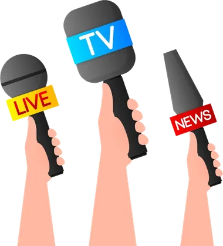

חמש רמות של אמינות
הציון ניתן למקור בהקשר של הטענה שבודקים, ולא לגוף המפרסם באופן כללי.
מה נחשב ראיה, ומה רק נראה משכנע
ראיהמסמך רשמי (חוק, פסק דין, נתון רשמי, פרוטוקול), מקור ראשוני שאפשר לקרוא במלואו, והצלבה עם שני מקורות עצמאיים שאינם מעתיקים זה מזה.
לא ראיהתואר או תפקיד של מי שאמר, מספר שיתופים או לייקים, עיצוב מקצועי, לוגו או סיומת של אתר, "מקור בכיר" בלי שם, ו"מחקר מצא" בלי שם המחקר.
סימן לבדיקהטענה שמסבירה הכול בקנוניה סודית, ואי אפשר לחשוב על שום דבר שיפריך אותה.
הבדיקה בארבעה שלבים

עוצרים ומתארים
כותבים את הטענה במשפט אחד, ואת מה שידוע על המקור:
- מה סוג המקור, ומי פרסם?
- מתי ואיפה פורסם, ואיך הגיע אליי?
- על מה הטענה נשענת: מסמך, נתון, עדות, צילום?
- מה אני מרגיש/ה כשאני קורא/ת, והאם אני רוצה שזה יהיה נכון?
נותנים ציון ראשון משלי מ־1 עד 5, עם נימוק קצר. מה שלא ידוע, כותבים "לא ידוע".
יוצאים מהמקור: קריאה לרוחב
לא מתעמקים בדף עצמו, אלא פותחים לשונית חדשה ובודקים מה אחרים אומרים עליו (SIFT):
- מי עומד מאחורי המקור: מה כתוב עליו מחוץ לאתר עצמו.
- כיסוי טוב יותר: מה מדווחים מקורות עצמאיים אחרים, ואתרי בדיקת עובדות.
- עד המקור הראשוני: המסמך, החוק, המחקר או הסרטון המלא, והאם הטענה תואמת אותם.
- תמונה או סרטון: חיפוש תמונה הפוך, תאריך הצילום, סימנים לעריכה או ליצירה ב־AI.
מוסיפים פריטי מידע
כל דבר שמצאתי נרשם: מה מצאתי ומאיפה. ממשיכים עוד ועוד, עד שאפשר לומר בכנות: אין לי עוד מידע.
ציון סופי ונימוק
נותנים ציון מ־1 עד 5 לאור מה שנמצא, ומשווים לציון הראשון: מה השתנה, ולמה? מה עדיין לא ידוע, ומה היה משנה את הציון?
1 אינו "שקר", ו־5 אינו "אמת מוחלטת". הציון אומר עד כמה הטענה נשענת על ראיות שנבדקו.
10 שאלות לפני ציון
עוברים עליהן לפי הסדר. בטלפון גוללים הצידה.
בודקים עם ה־AI שלי
הפנקס אינו מחובר למנוע בדיקה. אפשר לחבר אותו ל־AI שבחרת (ChatGPT, Claude, Gemini או אחר), בחשבון שלך: מעתיקים את ההנחיה, מדביקים אותה בשיחה חדשה, ומביאים את המקור.
כך נראית תחילת השיחה:
AIמה הטענה במשפט אחד, ומי פרסם אותה? ולפני שאני נותן/ת ציון: מה הציון שלך מ־1 עד 5, ולמה?
אניצילום מסך מטיקטוק, בלי שם. נראה לי 2, כי אין מקור מזוהה.
AIאני מסכים/ה עם הכיוון. שלוש בדיקות לעשות עכשיו: חיפוש תמונה הפוך, ...
ה־AI יכול לטעות ואף להמציא מקורות וקישורים. כל מקור שהוא מציע בודקים בעצמנו, וההכרעה שלך. כדאי לא להדביק פרטים מזהים של אנשים פרטיים.
החוקרות
הפנקס נכתב במסגרת המחקר "בדיקת אמינות של מקורות". שאלה, הערה או רעיון: נשמח לשמוע.
הפנקס בטלפון שלי
אייפון
- פותחים את הדף בספארי.
- לוחצים על כפתור השיתוף (ריבוע עם חץ למעלה).
- בוחרים "הוספה למסך הבית".
אנדרואיד
- פותחים את הדף בכרום.
- לוחצים על שלוש הנקודות בפינה העליונה.
- בוחרים "התקנת אפליקציה" או "הוספה למסך הבית".
נפתח בכל דפדפן, גם בלי אינטרנט. אפשר גם להדפיס או לשמור כ־PDF.